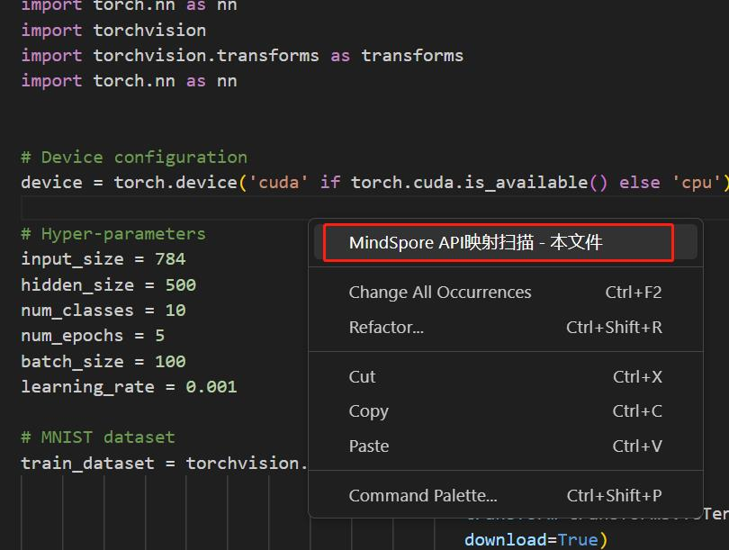
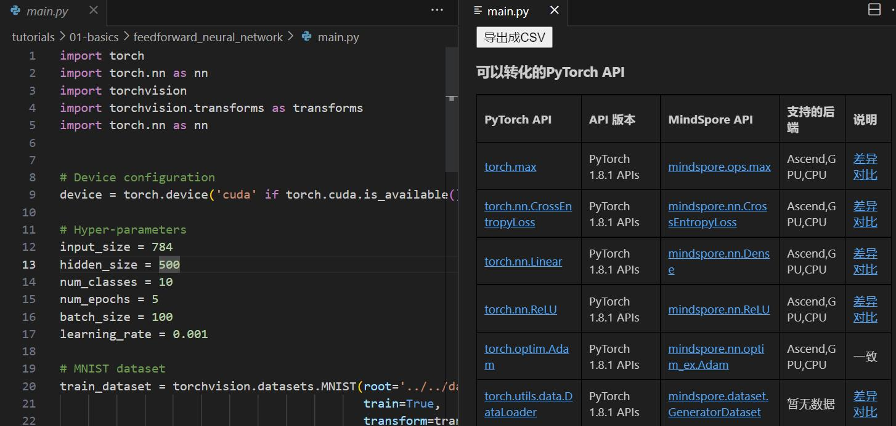
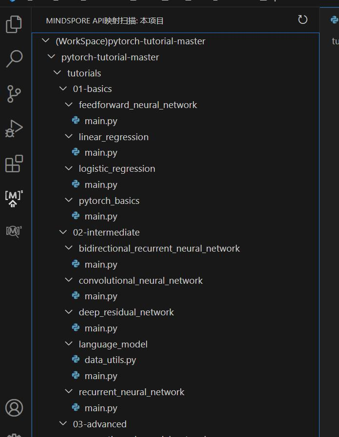
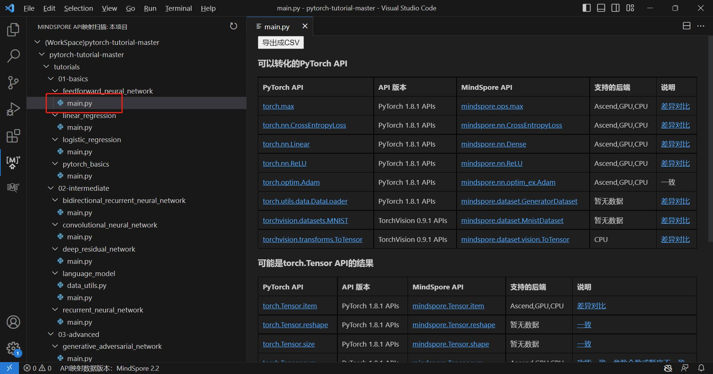
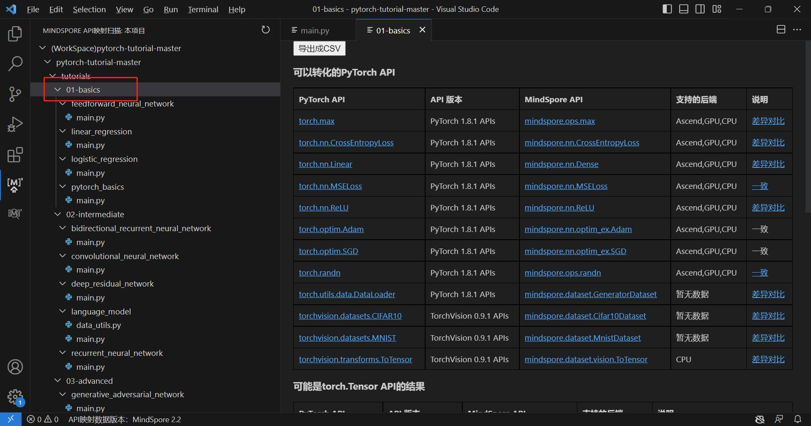
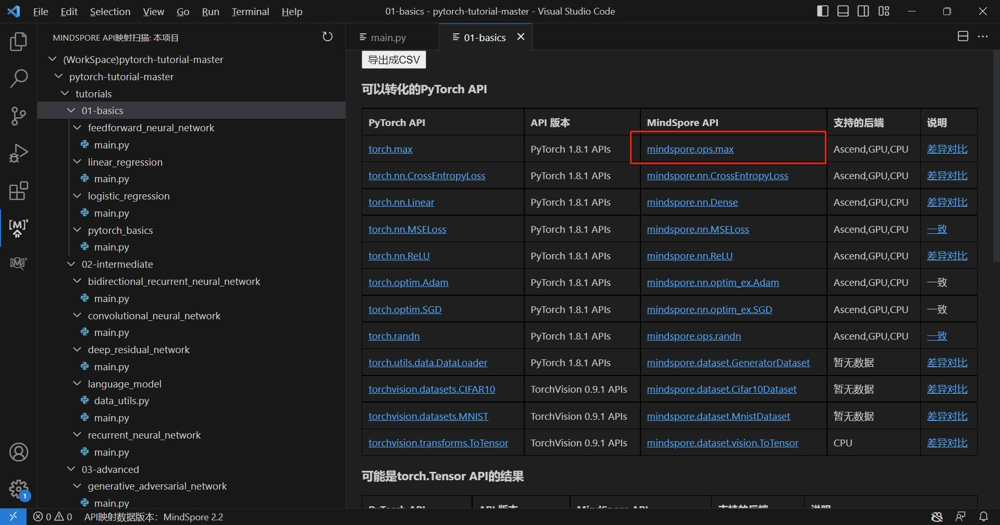
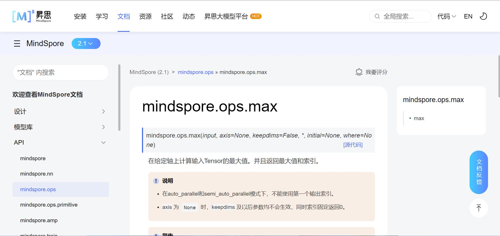

API映射 - API扫描

功能介绍
快速扫描代码中出现的API，在侧边栏直接展示API详情。
为方便其他机器学习框架用户，通过扫描代码中出现的主流框架API，联想匹配对应MindSpore API。
API映射的数据版本支持切换，详情请参考API映射-版本切换章节。
文件级API映射扫描
在当前文件任意位置处右键，打开菜单，选择“扫描本地文件”。

右边栏会弹出当前文件中扫描出的算子，包括“可以转化的PyTorch API”、“可能是torch.Tensor API的结果”、“暂未提供直接映射关系的PyTorch API”三种扫描结果列表。
其中：
“可以转换的PyTorch API”指在文件中被使用的且可以转换为MindSpore API的PyTorch API
“可能是torch.Tensor API”指名字和torch.Tensor的API名字相同，可能是torch.Tensor的API且可以转换为MindSpore API的API
“暂未提供直接映射关系的PyTorch API”指虽然是PyTorch API或可能是torch.Tensor的API，但是暂时没有直接对应为MindSpore API的API

项目级API映射扫描
点击Visual Studio Code左侧边栏MindSpore API映射扫描图标。

左边栏会生成当前IDE工程中仅含Python文件的工程树视图。

若选择视图中单个Python文件，可获取该文件的算子扫描结果列表。

若选择视图中文件目录，可获取该目录下所有Python文件的算子扫描结果列表。

蓝色字体部分均可以点击，会自动在用户默认浏览器中打开网页。

